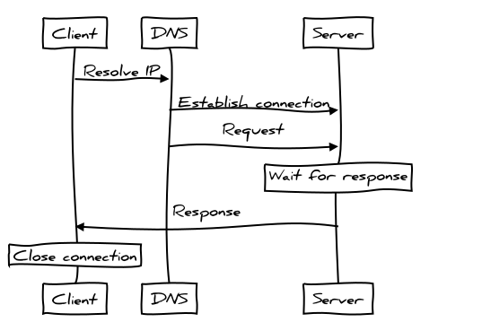

http2
something we should know
Created by Howard.Zuo / @Howard.Zuo
http is old
HTTP/1.1 has served the Web well for more than fifteen years, But it's not meant to be a perfect solution, its age is starting to show.
diagram of http lifecycle
http is stateless
It means each request must contain enough information on their own to fulfill the request. Even the information is shared during lifecycle.
For example: sessionID is always in the header for each request.http is limited
Websites nowadays include many different components, such as HTML, CSS, JavaScript, images, video and Flash animations...
what we have now?
- in-lining
- spriting
- concatenation
- eager loading
- GraphQL
All above solutions are for reducing request
Why http2
- http2 is binary, instead of textual
- http2 is fully multiplexed, instead of ordered and blocking
- http2 can therefore use one connection for parallelism
- http2 uses header compression to reduce overhead
- allows servers to “push” responses proactively into client caches
how we use it
with reverse proxy

You dont't have to do anything to your backend, just leave it as what it was.
with backend
| Dart | Haskell | Ruby | Go | C# | Python | Rust | Java | Lua | Erlang | NodeJS | Objective-C/Swift |
|---|---|---|---|---|---|---|---|---|---|---|---|
| Dart |
second-transfer ShimmerCat Warp |
http-2 | http2 | HttpTwo | hyper | hyper |
Shaka Jetty Netty OkHttp Undertow |
lua-http | lucid |
node-http2 Sasazka |
WKWebView |